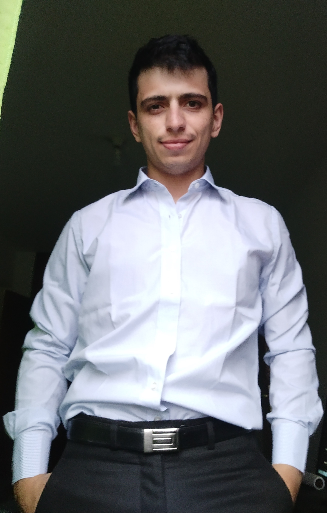

Home

Hello! My name is
Juan José Armanino
Full-Stack Developer Jr.
A passionate and enthusiastic entrepreneur navigating the winding road to becoming a full-fledged software engineer (if that's really achievable these days!). I dedicated more than ten years to 9-to-5 office jobs. Then I decided to take a turn and dedicate myself to what I've always been passionate about: developing valuable solutions for real people.
- Salta, Argentina
- +54 9 3875763433
- juanjo@armanino.dev
- 11th March, 1994